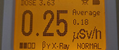
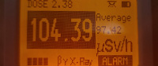
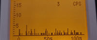
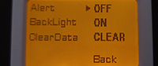

因为这款设备更新了新版本，所以评测来了；旧版本评测参见：盖革计数器 空霸 KB6011 评测
空霸 KB6011 辐射测量仪是从维天监制免费借来的，所以总结一下使用感受。
这篇文章在我的Bilibili也有同步
参考：等待更新
我们向维天借了这款测量仪器
如果您正在考虑购买它，请从以下页面与它们联系。
2023空霸KB6011
空霸 NEW KB6011 是使用盖革米勒管的辐射测量仪（盖革计数器）。
功能包括：
您收到的东西如下图所示
还送了充电用的数据线
|
|
主体看起来是这样。
外观和上一代没有区别
 |
 |
有小册子说明书，有使用说明和型号参数。
提供中文和英文两个版本。

这是尺寸对比。
我将 RG1000、CD 和 KB6011 并排放置，以便您可以看到尺寸。
它重 81 克，长度和 DISC 差不多。
 |
 |
 |
这次的 KB6011 传感器仅提供 J321 和 J305 两个版本，不再提供 SBM-20
但据制造商所说如果有需要可以自己动手更换，将传感器和原始原件安装到位
后同时按住 上 和 下 按键会进入出厂设置菜单，将传感器设置为 SBM-20 即可
如下图所示，新版 KB6011 更换了主控芯片
 |
 |
画面显示如下。
从左开始依次是“主页”、“剂量页”、“直方图页”。
 |
 |
 |
这是主页新旧版本的对比

功能上和旧版本相差不大，下面摘自盖革计数器 空霸 KB6011 评测
KB6011 的功能并没有很多，大多数为简单的功能
在主界面，剂量率显示在中心偏左的位置，字体也是最大的
底部中心显示了此机型可以测量的射线种类
中心偏右上显示了剂量率平均值
顶部为状态栏
超过 0.5 µSv/h 后，屏幕的背光灯开始闪烁，右下角出现“ALARM”字样，而不是“NORMAL”字样。
即使我们关闭超过特定剂量率阈值的报警，此功能也有效。可以看到厂商对用户的态度：即使你关闭了阈值信号，闪屏仍然会提醒你已经超过了0.5µSv/h的剂量率。
如果我们超过 99.99 µSv/h，那么结果将显示在黑色背景上。这样一个额外的强调，我们测量了三位数的值，一种“特别警告”的感觉
|  |  |
|  |
|  |
在旧版本中 KB6011 只能显示 μSv/h 一种单位，所以它无法测量β射线的正确值
新版本可以显示CPM，所以没有这个问题了。
它在本底辐射的情况下反应速度为15秒刷新1次，在报警的情况下会以1、3、5、、10、15秒递进逐级放慢刷新速度，辐射水平变化较大的时候每1秒刷新1次
由于 KB6011 说明里没有写，所以不清楚它的方向特性。
但是有一点需要注意，它的盖革管在机身的左侧，使用时请注意。
我分别测量了Am-241光子源、U-238链源和Cs-137源
Am-241光子源
KB6011:Avg:1.16 μSv/h Max:1.51μSv/h
参考值:0.47μSv/h
U-238链源
KB6011:Avg: 5.96 μSv/h Max:6.73μSv/h
参考值：0.62 μSv/h
Cs-137源
KB6011:Avg: 0.33 μSv/h Max:0.50μSv/h
参考值：0.17 μSv/h
NEW KB6011 是一款非常易于使用的设备，价格也很合适
有能量补偿，根据制造商的描述补偿金属为3%的铅+97%的锡，但比较薄，对低能射线还是会有一定的高估情况
新版本可以显示 CPM 我认为是非常好的，以往只能显示μSv/h导致不能正确的测量
现在，测量结果中包含β射线可以直接读取 CP M并于本底 CPM 对比
GM管型号的情况下，由于灵敏度低，因此数值在低剂量下波动，往往读数值为0.1-0.25 µSv/h。
虽然灵敏度低，但我认为它足以用于检测常见的放射性物质。说明书中写灵敏度是基于Co-60的情况下
所以我假定校准是基于Co-60的（由于我没有Co-60源，所以无法测试）
我认为这款机型是很容易携带去各种地方，它很轻，也易于握持，所以对于新手来说是不错的选择。